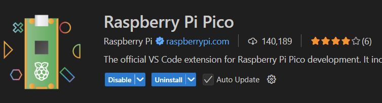
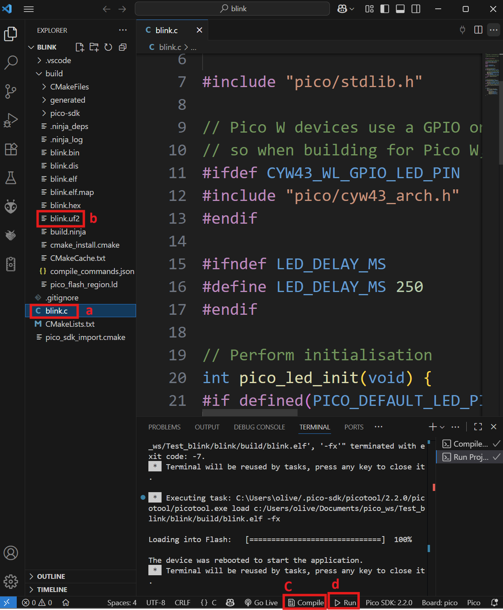

Environment and Toolchain
Learning objectives
By the end of this session, you should be able to:
- distinguish source code from the machine instructions executed by a microcontroller;
- explain cross-compilation using a host computer and a target MCU;
- identify the main tools involved in building embedded firmware;
- understand, at a high level, the role of CMake and the Pico SDK;
- compile a C program for the Raspberry Pi Pico 2;
- identify common build outputs such as
.elfand.uf2; - if hardware is available, load the firmware and verify that it runs.
From source code to firmware
A microcontroller does not directly understand C code.
The CPU executes machine instructions defined by its ISA. A development toolchain converts the source code written by the programmer into those instructions.
Programming-language levels
Programming languages provide different levels of abstraction from the hardware.
-
Low-level languages are closely related to the processor architecture.
Example: Assembly. -
High-level languages provide more abstraction from hardware details.
Examples: Python, Java, C#. -
C is often described as a middle-level language because it combines structured programming with direct access to memory, registers, and hardware.
For embedded systems, C remains especially useful because it gives the programmer significant hardware control while still providing higher-level structures such as functions, loops, and data types.
Compiled vs interpreted languages
Programs can be executed in different ways.
| Compiled | Interpreted |
|---|---|
| Source code is translated before execution | Code is processed by a runtime during execution |
| Produces machine code for a target platform | Requires an interpreter/runtime on the target |
| Example: C / C++ | Example: Python |
In this course we will focus primarily on compiled C/C++ firmware.
Cross-compilation
On a desktop computer, the processor running the development tools is usually different from the processor inside the microcontroller.
HOST COMPUTER TARGET
PC Raspberry Pi Pico 2
x86-64 processor RP2350
│ Arm Cortex-M33
│
│ C source code
▼
Cross-compiler
│
│ Arm machine code
└───────────────────────────► MCU
The computer where we compile the program is called the host.
The processor where the final program will run is called the target.
This is why the compiler must know our target: instructions generated for an x86-64 computer cannot be directly executed by an Arm Cortex-M33.
Our target: Raspberry Pi Pico 2
The Raspberry Pi Pico 2 uses the RP2350 microcontroller.
The RP2350 contains two possible processor architectures:
flowchart TD
RP["RP2350"] --> ARM["Dual Arm Cortex-M33"]
RP --> RISCV["Dual Hazard3 RISC-V"]In this course we will compile for the Arm Cortex-M33 so that everyone uses the same target architecture.
Building our first firmware
Our objective is:
blink.c
↓
Build tools
↓
Firmware for the RP2350
↓
blink.uf2
↓ (If you have a Pico 2)
Load onto the Pico 2
↓
Pico 2 executes it
Step 1 — Prepare the development tools
We will use:
- Visual Studio Code as the development environment;
- the Raspberry Pi Pico VS Code extension;
- the Pico C/C++ SDK;
- the Arm cross-compilation toolchain;
- CMake as part of the build system.
Install Visual Studio Code
Install Visual Studio Code.
Install the Raspberry Pi Pico extension
Open VS Code:
- Select Extensions.
- Search for Raspberry Pi Pico.
- Install the official extension.

What did we just install?
The extension helps configure several tools that work together:
- the compiler translates C/C++ for the target CPU;
- the assembler converts assembly into machine code;
- the linker combines compiled code and libraries;
- the Pico SDK provides libraries, headers, and board support;
- CMake describes how the project should be built.
Together, the compiler, assembler, linker, and related programs are commonly called a toolchain.
Step 2 — Create the Blink project
In the VS Code sidebar:
- Select the Raspberry Pi Pico Project icon.
- Select New Project from Examples.
- Search for the
blinkexample. - Select Pico 2 as the board.
- Select the destination folder.
- Click Create.
Note
The first project may require the extension to download and configure the SDK and cross-compilation toolchain.

Before compiling anything, look at the project files.
Two files are especially important for us:
Project
│
├── blink.c
│ └── What should the MCU do?
│
└── CMakeLists.txt
└── How should this project be built?
Step 3 — Look at the build instructions
The Pico SDK uses CMake to describe how a project should be built.
You do not need to learn CMake in detail yet.
For now, think of CMakeLists.txt as the file that connects our source code to the build tools.
A simplified part of the project looks like:
add_executable(blink
blink.c
)
target_link_libraries(blink
pico_stdlib
)
pico_add_extra_outputs(blink)
Read it as:
add_executable(...)Use blink.c to build this programtarget_link_libraries(...)Use the Pico standard librarypico_add_extra_outputs(...)Generate firmware files such as UF2
Step 4 — Look at the source code
Open blink.c.
#include "pico/stdlib.h"
int main(void) {
const uint led = PICO_DEFAULT_LED_PIN;
gpio_init(led);
gpio_set_dir(led, GPIO_OUT);
while (true) {
gpio_put(led, 1);
sleep_ms(250);
gpio_put(led, 0);
sleep_ms(250);
}
}
At this moment we have C source code, not firmware that the CPU can execute directly.
What does the program do?
Makes common Pico SDK functions and definitions available to the program.
Defines the main entry point of our application after the startup code has prepared the system.
Selects the GPIO connected to the default LED for the selected board.
Initializes the pin and configures it as a digital output.
Creates a loop that runs continuously while the system is powered.
Changes the digital output between HIGH and LOW.
Pauses execution for approximately 250 milliseconds.
Equivalent in AVR
#include <avr/io.h>
int main(void) {
DDRB |= (1 << DDB5); // Set pin 13 as output
while (1) {
PORTB |= (1 << PORTB5); // Turn on LED
_delay_ms(250);
PORTB &= ~(1 << PORTB5); // Turn off LED
_delay_ms(250);
}
}
Step 5 — Compile the project
Select Compile in the Pico extension.
Several stages occur automatically:
flowchart LR
SRC["blink.c<br/>Source code"] --> PRE["Preprocessor"]
PRE --> COMP["Compiler"]
COMP --> ASM["Assembler"]
ASM --> OBJ["Object files<br/>.o"]
OBJ --> LINK["Linker"]
SDK["Pico SDK<br/>libraries"] --> LINK
LINK --> ELF["blink.elf"]
ELF --> UF2["blink.uf2"]What just happened?
- Preprocessor, Processes directives such as
#include "pico/stdlib.h"and prepares the source code for compilation. - Compiler, Translates our C code into instructions for the selected Arm Cortex-M33 target. This is the cross-compilation step.
- Assembler, Converts assembly instructions into machine-code object files such as
.ofiles. - Linker, Combines:
compiled code + Pico SDK librariesinto a single executable file. It also assigns the final locations of code and data in the MCU's memory map. - Firmware outputs, The executable is converted into formats that can be inspected, debugged, or loaded onto the board.
Step 6 — Inspect what the build produced
After a successful build, locate the build directory.
You should find several generated files.
| File | What it tells us |
|---|---|
.elf |
The linked executable containing the program and debugging information |
.uf2 |
The firmware file we can load onto the Pico over USB |
.bin / .hex |
Other representations of the firmware |
.map |
Where code, data, and symbols were placed in memory |
.dis |
The generated processor instructions in disassembled form |
These files connect several concepts from the previous class.
.dis — from C to ISA
Open the generated .dis file.
Our original program contained C:
#include "pico/stdlib.h"
int main(void) {
const uint led = PICO_DEFAULT_LED_PIN;
gpio_init(led);
gpio_set_dir(led, GPIO_OUT);
while (true) {
gpio_put(led, 1);
sleep_ms(250);
gpio_put(led, 0);
sleep_ms(250);
}
}
The disassembly shows instructions intended for the processor.
100001e0 <main>:
100001e0: b570 push {r4, r5, r6, lr}
100001e2: 2019 movs r0, #25 ; r0 = 25 (PICO_DEFAULT_LED_PIN)
100001e4: f000 f814 bl 10000210 <gpio_init> ; gpio_init(led)
100001e8: f04f 0501 mov.w r5, #1 ; r5 = 1 (constant "true"/high)
100001ec: 2319 movs r3, #25 ; r3 = 25 (pin number again)
100001ee: ec45 3044 gpioc_bit_oe_put r3, r5 ; gpio_set_dir(led, GPIO_OUT)
100001f2: f04f 0600 mov.w r6, #0 ; r6 = 0 (constant "false"/low)
100001f6: 2419 movs r4, #25 ; r4 = 25 (pin number, loop-invariant)
; ---- top of while(true) loop ----
100001f8: ec45 4040 gpioc_bit_out_put r4, r5 ; gpio_put(led, 1)
100001fc: 20fa movs r0, #250 ; r0 = 250
100001fe: f000 fbeb bl 100009d8 <sleep_ms> ; sleep_ms(250)
10000202: ec46 4040 gpioc_bit_out_put r4, r6 ; gpio_put(led, 0)
10000206: 20fa movs r0, #250 ; r0 = 250
10000208: f000 fbe6 bl 100009d8 <sleep_ms> ; sleep_ms(250)
1000020c: e7f3 b.n 100001f6 <main+0x16> ; jump back to top of loop
This is the connection between the ISA discussed previously and the compiler we are using today.
.map — from program to memory
The .map file shows where the linker placed different parts of the program.
This connects to the memory concepts discussed previously:
Program
├── Code
├── Constants
├── Variables
└── Other sections
↓
Assigned to regions in the MCU memory map
You do not need to understand the complete .map file yet. For now, recognize that the linker decides where the program will live in memory.
.uf2 — from executable to device
The .uf2 file is the firmware image we will use to load the program onto the Pico.
Step 7 — Modify and rebuild
Change:
to:
Compile the project again.
You have now repeated the development cycle:
Step 8 — Load the firmware onto the Pico 2
If you already have your Pico 2, you can now test the firmware.
BOOTSEL method
- Disconnect the Pico 2.
- Hold the BOOTSEL button.
- Connect the board through USB.
- Release BOOTSEL.
- The Pico 2 should appear as a USB mass-storage device named RP2350.
- Compile and load the program onto the board.
- In the left sidebar, select the main file blink.c.
- Click the "Compile" button.
- Wait for the compilation to finish without errors, and verify that a UF2 target file was created.
- To program it, drag the UF2 onto the corresponding drive or click the "Run" button.
The board will reboot and begin executing the firmware.

Windows upload problem
If Windows detects a Pico in BOOTSEL mode but the development tools cannot access it, a USB-driver configuration issue may be present.
If you encounter:
ask the instructor before changing USB drivers. If required, the driver can be inspected or changed using Zadig.
Summary
We start with a C file:
and ended with firmware that can run on another processor:
flowchart LR
C["C source<br/>blink.c"]
CM["CMake<br/>build description"]
SDK["Pico SDK<br/>libraries"]
TC["Cross-toolchain<br/>compiler + assembler + linker"]
ELF["blink.elf"]
UF2["blink.uf2"]
MCU["RP2350<br/>Cortex-M33"]
C --> TC
CM --> TC
SDK --> TC
TC --> ELF
ELF --> UF2
UF2 --> MCUKey terms
| Term | Meaning in today's project |
|---|---|
| Host | The computer where we build the project |
| Target | The RP2350 where the firmware will run |
| Cross-compiler | Compiler running on the host but generating code for the target |
| Toolchain | Compiler, assembler, linker, and related build tools |
| SDK | Libraries and support code for the Pico platform |
| CMake | Describes what should be built and which libraries are required |
| ELF | Linked executable produced by the build |
| UF2 | Firmware image that can be loaded onto the Pico |
Main idea
Clicking Compile is not a mysterious operation.
It is a sequence of tools that transforms:
our source code → target machine instructions → a linked executable → firmware that the microcontroller can run.